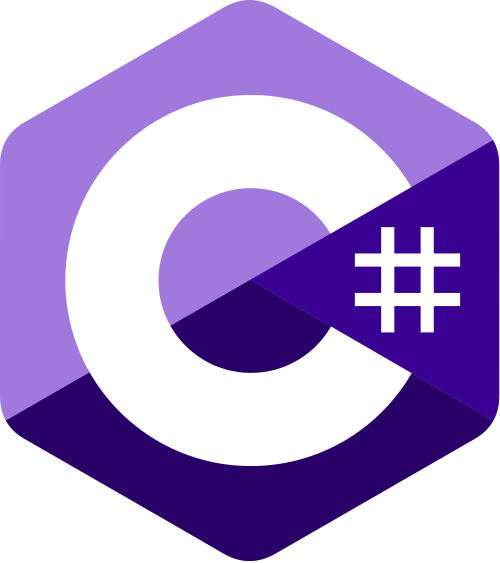
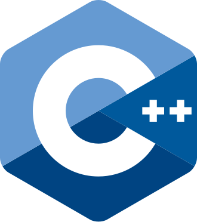

Software Engineering
Building reliable, scalable software with clean design and strong fundamentals.
👋 Hi, I'm Aaron — a Software Engineering student at the University of Birmingham with hands-on experience across backend systems, object-oriented programming, and real-world problem solving.
About
Software engineer with a strong foundation and a practical mindset.
I am a motivated Software Engineering student with a solid foundation in computer science principles, object-oriented programming, and problem-solving. I enjoy building systems that are reliable, readable, and easy to maintain.
Through university projects and hands-on experience, I have worked across backend development, data processing, and performance-focused computing. I am particularly interested in writing efficient code, designing clean architectures, and continuously improving software quality.
Alongside technical skills, I bring strong communication, teamwork, and leadership abilities developed through tutoring, retail roles, and competitive team challenges.
Experience
Work experience
Tutor @ Kaiden Education
Tutor GCSE AQA Mathematics SEN students, creating personalised lesson plans and adapting explanations to improve understanding and performance.
Secretary @ UoB Roundnet Society
Organised and ran local tournaments while managing day-to-day logistics for a 30-member society, growing membership threefold during tenure through improved outreach and event organisation.
Retail Worker @ Budgens
Developed strong organisational, time-management, and customer-service skills while working in a fast-paced environment.
Waiter @ Hogarth Stone Manor
Built teamwork and adaptability skills while delivering high-quality service under pressure.
Technical experience
Group Leader — Cyber Leaders Challenge
Gained hands-on experience in cybersecurity while developing leadership and teamwork skills. Collaborated with professionals from government, industry, and academia to solve real-world cyber challenges. (NCSC / Cheltenham)
Group Leader — CIUK 2024 Cluster Challenge
Led Team TED to a top 10 finish at the National Computing Insight UK Conference. Tackled high-performance computing challenges including workload optimisation, power usage reduction, and cluster performance improvements using Docker, Kubernetes, and auto-scaling clusters.
Team Lead — Birmingham Transport App Project
Led a team to design an accessible public transport app for HS2's Curzon Street Station. Focused on inclusive user experience, system architecture, and research into accessibility needs to inform design decisions.
3rd Place — BEAR HPC Challenge
Secured 3rd place in a three-day intensive challenge. Optimised a large-scale Sudoku solver and applied deep learning techniques to estimate tropical cyclone intensity on high-performance computing systems.
Skills
Languages, tools, and strengths
Programming

C Sharp
C++Tools & Concepts
Contact
Open to software engineering opportunities.
Currently seeking internships and graduate software engineering roles.